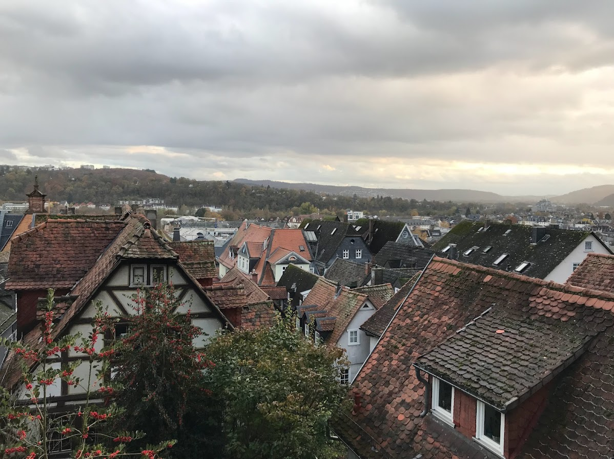

Meine Reiseerlebnisse
Begleiten Sie mich auf eine Reise zu den wunderschönen Orten, die ich auf der ganzen Welt besucht habe.
Marburg, Deutschland

Marburg, die Stadt mit ihrer malerischen Altstadt und der beeindruckenden Elisabethkirche, hat mich sofort in ihren Bann gezogen. Die engen Gassen und historischen Gebäude erzählen die Geschichte einer Stadt, die im Laufe der Jahrhunderte viele Veränderungen erlebt hat. Marburg ist auch für ihre faszinierende Mischung aus Kulturen bekannt. Ich habe zwei Wochen damit verbracht, die historischen Stätten zu erkunden, darunter die prächtige Elisabethkirche und das Landgrafenschloss. Die Altstadt mit ihren verwinkelten Gassen und gut erhaltenen Fachwerkhäusern lädt zum Flanieren ein und erzählt von der reichen Geschichte der Stadt.
Am meisten hat mir in Marburg das Essen gefallen – von traditionellen Gerichten bis zu süßem Gebäck war jede Mahlzeit ein Abenteuer. Die Einheimischen waren unglaublich gastfreundlich, und ich habe während meines Aufenthalts einige Freunde gefunden.
Frankfurt, Deutschland

Berlin ist eine Stadt der Gegensätze, in der Geschichte und Moderne Seite an Seite existieren. Ich habe die Gedenkstätte Berliner Mauer und das Brandenburger Tor besucht, die eindrucksvolle Erinnerungen an die komplexe Vergangenheit Deutschlands bieten. Die lebendige Kunstszene der Stadt zeigte sich in der Straßenkunst der East Side Gallery und den zahlreichen Galerien in Mitte.
Das Nachtleben in Berlin ist legendär, und ich habe es genossen, verschiedene Stadtteile wie Kreuzberg und Friedrichshain zu erkunden. Das öffentliche Verkehrsnetz machte die Orientierung einfach, und ich schätzte den Fokus auf Nachhaltigkeit und Grünflächen.
Barcelona, Spanien

Barcelona hat mich mit seiner einzigartigen Architektur begeistert, insbesondere mit Gaudís Meisterwerken wie der Sagrada Familia und dem Park Güell. Das mediterrane Klima der Stadt war ideal für Spaziergänge entlang der Las Ramblas und zum Entspannen am Strand von Barceloneta.
Ich habe Tapas auf lokalen Märkten wie La Boqueria genossen und dabei viel über die katalanische Küche und Kultur gelernt. Die Stadt hat ein entspanntes Tempo, die Einheimischen genießen lange Mittagessen und abendliche Spaziergänge. Mein Besuch fiel mit einem lokalen Fest zusammen, was meinem Erlebnis eine besondere Authentizität verlieh.
Zukünftige Reisepläne
Meine Reiseliste wächst ständig! Hier sind einige Reiseziele, die ich bald besuchen möchte:
- Tokio, Japan – um die einzigartige Mischung aus Tradition und modernster Technologie zu erleben
- Machu Picchu, Peru – um die alten Ruinen und atemberaubenden Landschaften zu erkunden
- Cape Town, Südafrika – wegen der vielfältigen Kultur und der beeindruckenden Natur
- Die Nordlichter in Island – um dieses spektakuläre Naturphänomen zu erleben
- Das Great Barrier Reef, Australien – um in einem der vielfältigsten Meeresökosysteme der Welt zu tauchen
Meine Reisetipps
Basierend auf meinen Erfahrungen hier einige Reisetipps, die ich unterwegs gelernt habe:
- Lernen Sie ein paar grundlegende Sätze in der Landessprache – das hilft enorm!
- Packen Sie leicht, aber clever – vielseitige Kleidung, die sich kombinieren lässt, ist entscheidend
- Informieren Sie sich vorab über lokale Bräuche und Etikette
- Probieren Sie die lokale Küche, auch wenn sie ungewohnt erscheint
- Bewahren Sie digitale und physische Kopien wichtiger Dokumente auf
- Bleiben Sie flexibel mit Ihrem Reiseplan – manchmal sind die ungeplanten Erlebnisse die besten
- Kommen Sie mit Einheimischen ins Gespräch für authentische Empfehlungen
Kontakt
Sie können mich direkt per E-Mail kontaktieren:
Mustafa Özdemir
mustafa.ozdemir1408@gmail.com